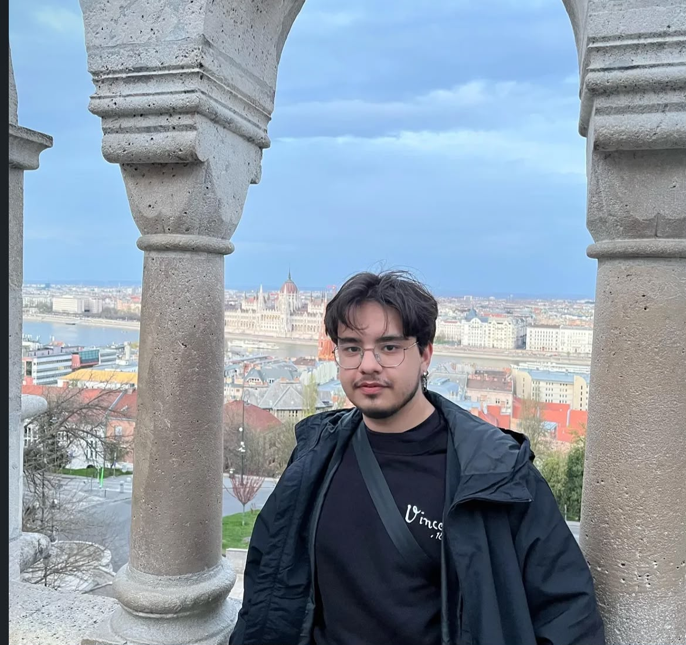
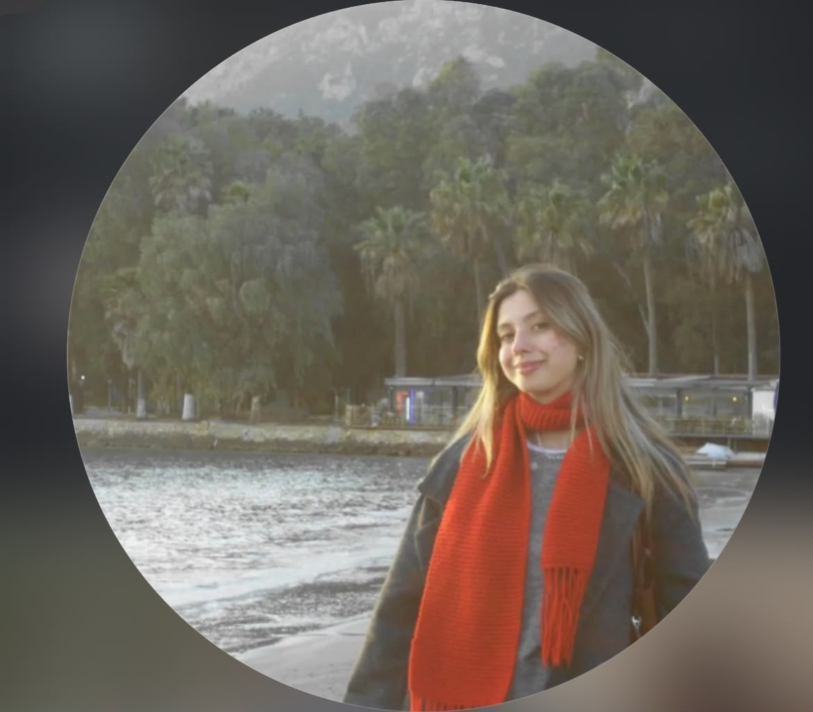
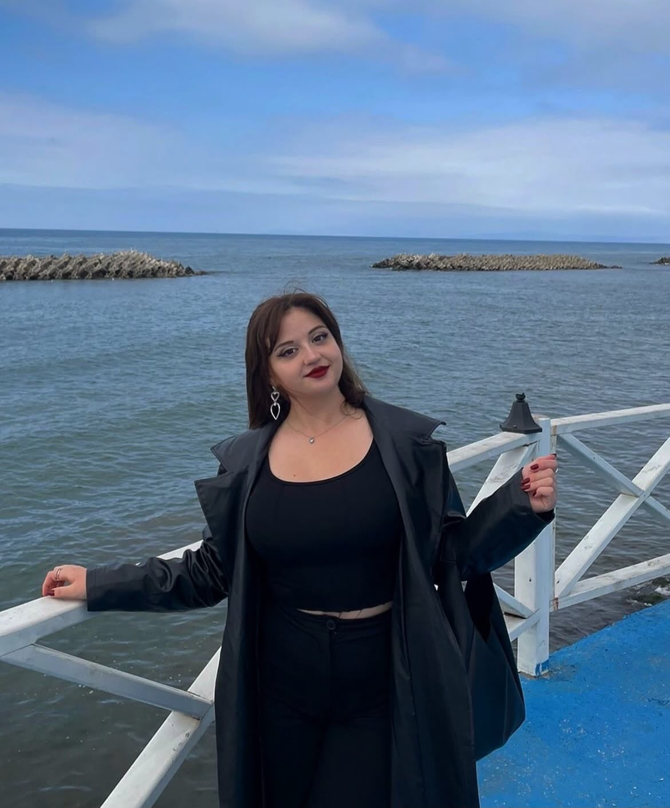
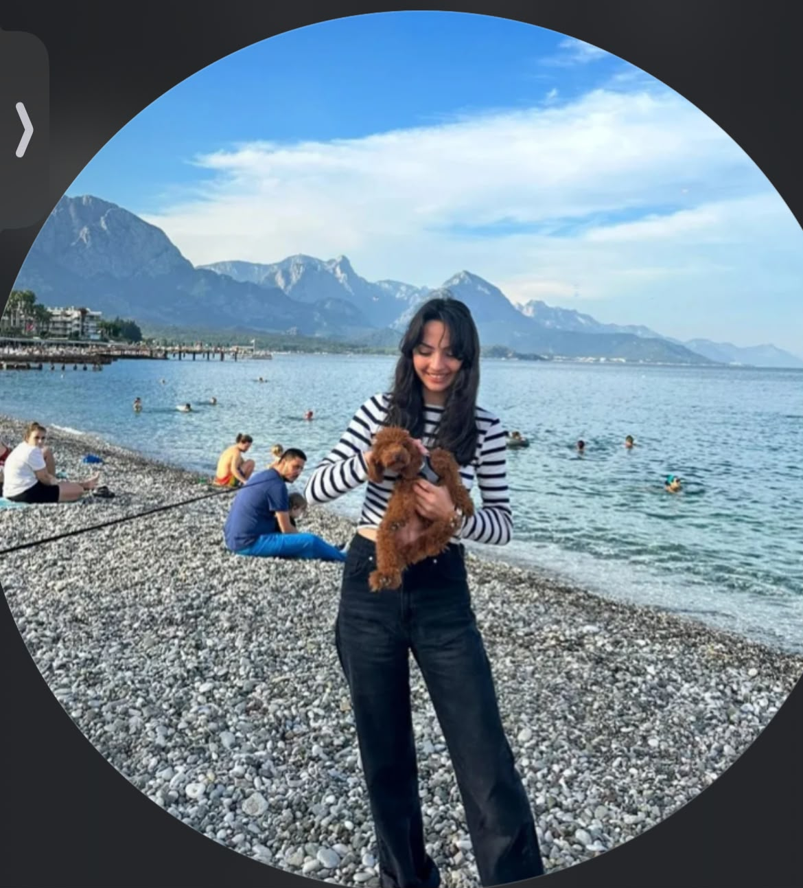

EKİBİMİZ
Farklı alanlardan gelen dört üniversite öğrencisi, ortak bir fikir ve aynı heyecanla YANKI'yı oluşturduk.

Erdem CALAY
Project Manager & Coordinator

Cemile Ceyda ÜNSAL
Project Designer & Communication Officer

Selin BÜLBÜL
Dissemination & Digital Media Expert

Melike BÜYÜKER
Project Concept Developer & Youth Empowerment Expert